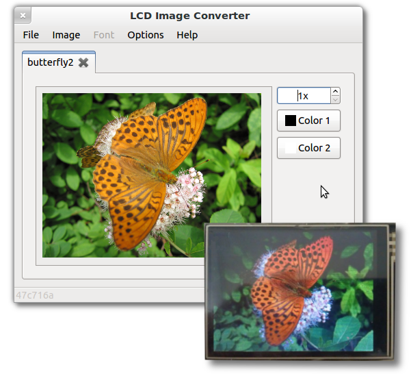

About
This application allows you to create bitmaps and fonts, and transform them to "C" source format for embedded applications.
The transformation of the images to the source code is made by using templates. Therefore, by modifying the templates, you can change the format of the output within certain limits.
Features
- Create a single image;
- Create fonts (set of images - characters):
- Including unicode charset.
- Create the data structures for displays:
- Monochrome, grayscale, color;
- With vertical and horizontal orientation of bytes;
- 8, 16, 24, 32-bit data;
- 1...32 bits per pixel;
- RLE compression;
- With different display controllers, not limited by one particular model.
Screenshot
Video
Support or Contact
Having trouble with LCD Image Converter? Check out the documentation at www.riuson.com or contact riuson@gmail.com and we’ll help you sort it out.